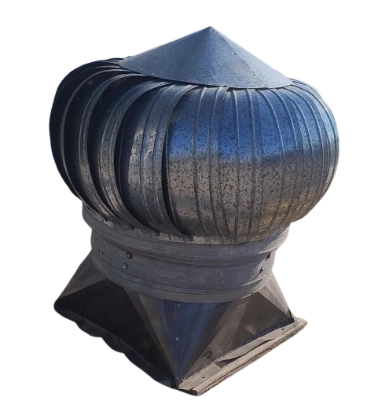

Ficha Técnica
- tamaño 36"
- tiempo de funcion Las 24hrs
- Material Lámina Galvanizada
- Consumo No consume electricidad
- En condiciones sin viento
- instalaciónLos extractores eólicos se instalan en el techo al exterior, de manera que aproveche la energía del viento para funcionar. Están compuestos por tres partes: base, extractor eólico y clapeta. La base del extractor es la parte que soporta el cuerpo del aparato y que permite su instalación en cualquier tipo de techo; el extractor eólico es comúnmente llamado "cebolla" y se compone de una parte giratoria anclada a una fija que lo asegura a la base; la clapeta es un obturador que se encuentra presente solo en algunos modelos de extractores y sirve para cerrar el paso del aire o regular su salida y se activa por una llave desde el exterior o cadenas desde el interior. Para maximizar sus beneficios, su instalación es totalmente sencilla, sólo hay que hacer agujero en la pared a la altura recomendada y con las dimensiones que especifican la base del extractor y después fijarlo con remaches y pijas. Al terminar se impermeabiliza los empalmes para que pueda comenzar a funcionar. Con nosotros puede encontrar una amplia gama de modelos de extractores, y además los asesoramos (si así lo requiere) para obtener los mejores resultados de su inversión